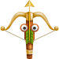
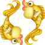

Berbec
Mit: Berbecii sunt mari războinici.
Nativul Berbec este o ființă independența, extrem de energică și de combativă. De obicei, are curajul de a o apucă pe căi neumblate și, în astfel de cazuri, devine deschizător de drumuri. Cu toate acestea, nu vei întâlni mulți nativi în prima linie, pe câmpul de luptă, deoarece cel mai adesea interesele lor nu coincid neapărat cu interesele tuturor. În special dacă își găsesc calea în viață și își întâlnesc jumătatea, persoanele Berbec devin ființe pașnice, preocupate de bunăstarea familiei. Pot avea, într-adevăr, o viață aventuroasă, până se așează la casă lor.
Taur
Mit: Taurul este un materialist fără suflet.
Nativii Taur pun mare preț pe bunurile materiale, începând de la câștigurile financiare, până la proprietăți. Sunt oameni care au o putere de muncă impresionantă și fac totul pentru a-și asigură un trăi cât mai bun. Cunosc poate mai bine că oricine valoarea banului, dar nu se închină acestuia. Banul reprezintă pentru ei doar un mijloc prin care își pot împlini nevoile: o casă bună, un cămin înfloritor, confort, sănătate și un trăi satisfăcător. În schimb, un nativ Taur își va alege întotdeauna un partener la fel de muncitor că și el, nu un om leneș și comod, alături de care nu poate construi nimic.
Gemeni
Mit: Gemenii sunt niste intelectuali remarcabili.
Inteligenți și plini de șarm, comunicativi și optimiști, Gemenii se pricep de minune să facă prezentări, să dea notificări, să transmită sau să facă schimb de informație. Curiozitatea lor este un atribut care îi însoțește întreagă lor viață și, de aceea, în timp reușesc să acumuleze informații din cele mai variate domenii. Pentru un outsider, nativul, vorbăreț și fermecător, poate părea un om cu o cultură impresionantă. Este vorba însă despre cunoștințe superficiale, nu de o bază solidă informațională. Dacă însă își descoperă vocația, atunci devin specialiști pe domeniul lor.
Rac
Mit: Racul ține ca la ochii din cap la obiectele moștenite de la rude.
Nativul Rac este descris adesea ciudatul pasionat de mileurile bunicii. Este adevărat că Racii sunt profund atașați de familie. Însă valorile familiei înseamnă pentru ei ideea de cămin, de cuplu și copii, mai degrabă decât ideile propagate de una sau mai multe rude. Aceste idei le par adesea depășite de vremuri nativii nu se mai supun vechilor reglementări. Pot prețui o bijuterie moștenită de la cineva drag, dar nu-și vor împodobi casa cu mobilă veche și plină de praf și nici nu vor renunța la o viață de dragul lucrurilor din trecut.
Leu
Mit: Leul este o persoană răzbunătoare.
Imaginea nativului Leu, asociată adesea cu terifiantă imagine a felinei, duce la o formă de amenințare resimțita de toți cei care reușesc să-l înfurie pe acest nativ. În realitate, Leul nu-și bate capul să găsească metode de răzbunare, deoarece pentru el lumea se împarte în două: oameni de preț și oameni care nu merită nici măcar un "bună ziua” din partea lui. De aceea, când sunt dezamăgiți sau neîndreptățiți, Leii aleg să întoarcă spatele celui care le-a greșit și să-l scoată definitiv din preocupările lor. Dacă există un soi de răzbunare din partea lor, aceea este disprețul sau indiferență.
Fecioară
Mit: Fecioarele sunt obsedate de curățenie si sănătate.
Nu există în tot zodiacul un semn grijuliu când este despre igienă. De obicei, Fecioarele se remarcă din primii ani de copilărie prin faptul că sunt foarte ordonate. O Fecioară ia măsuri imediat ce vede o pată pe jos, pentru că echilibrul și calmul său interior trebuie să se reflecte echilibrul universului exterior. Cu toate acestea, în funcție de alte influențe astrale, vei întâlni o Fecioară care nu are niciodată timp - curețe mașina sau să șteargă praful prin casă. Are noțiunea de anticorpi și, prin urmare, nu-și va opri copilul să bea dintr-un pahar care nu lucește de curățenie.
Balanță
Mit: Balanță este regina elegantei.
Se spune despre Balanțe că se nasc cu un simț al modei, pe care și-l rafinează odată cu trecerea anilor. Există, într-adevăr, Balanțe care au mult bun gust și cărora le place să se aranjeze. Însă o Balanță nu trebuie neapărat să dea tonul în modă. Există chiar nativi ai zodiei lipsiți cu desăvârșire de interes față de aspectul lor sau incapabili să asorteze două culori. De obicei, acești reprezentanți ai zodiei preferă ținutele comode, sport și în rarele momente când se aranjează în oglindă se fac remarcați printre cunoscuții care nu sunt obișnuiți să-i vadă la patru ace.
Scorpion
Mit: Scorpionului ii face plăcere să-și chinuiască partenerul.
Nativii Scorpion sunt celebrii pentru talentele lor erotice și, totodată, pentru atracția față de lumea întunericului. Acest lucru nu inseeamna însă că au porniri sado-masochiste. Se uită cu plăcere la un film horror, nu se tem să meargă prin locuri întunecate, dar în dragoste nu produc suferința partenerului pentru a-și face o plăcere. Odată dezamăgiți sau înșelați însă, Scorpionii pot deveni adversari de temut. De aceea, este mai bine să fii atent cu un astfel de nativ și să stabilești de la bun început cum stau lucrurile.
Săgetător

Mit: Săgetătorii sunt incapabili să fie familiști.
Una dintre cele mai independente zodii este Săgetătorul. Alături de Vărsător, nativul nu va renunță niciodată la libertatea lui, astfel încât, adesea, vă lasă impresia că se pune pe el pe primul loc, iar nevoile celorlalți sunt simple amănunte nedemne de atenția lui. Nimic mai fals. Călătoresc mult prin lume, cunosc o mulțime de oameni și, odată ce-și găsesc perechea, Săgetătorii devin parteneri de cuplu demni de încredere și părinți foarte atașați de copiii lor.
Capricorn
Mit: un Capricorn nu se exteriorizează niciodată.
Capricornii sunt în general ființe taciturne, foarte greu de cunoscut în profunzime. Obișnuiesc să-și ducă viață feriți de ochii lumii, pentru că nu prea au încredere în oameni. Acest lucru nu înseamnă însă că un Capricorn nu poate fi extrem de vorbăreț sau că nu vei vedea vreodată un nativ extrovertit. Într-un mediu în care se simte în siguranță, care de obicei se traduce prin casă și familie, Capricornul își da jos masca lui de om calm și echilibrat și-și exprimă părerile într-un mod pregnant. Când se înfurie, puțini oameni au curajul să-l înfrunte.
Vărsător
Mit: Vărsătorul pune mai mare preț pe o prietenie decat pe o relație de cuplu, care il sufocă.
Este cunoscut faptul că una dintre zodiile pentru care contează enorm independența este Vărsătorul. Nu înseamnă însă că Vărsătorul preferă o relație de scurtă durată, în ideea de a-și păstra intactă libertatea. Dacă are un partener care îi acordă timpul necesar pentru a se ocupă de proiectele personale, Vărsătorul este recunoscător și va da înapoi înzecit. Nativul zodiei nu este făcut pentru relații efemere, deoarece se implică greu și, odată ce-i este câștigată încrederea, trăiește cu nevoia unei stabilități afective.
Pești

Mit: Nativul Pești renuntă la individualitate in folosul umanității.
Se crede că nativii ultimului semn zodiacal sunt cei mai capabili să renunțe la sine în folosul celor din jur, subordonându-și eu-ul la noi. În realitate, Peștii posedă un real spirit umanist, dar nu renunță niciodată la vocea lor interioară, după care își coordonează acțiunile. În cazul în care consideră că lumea din jur nu merită sacrificiul lor, pot deveni extrem de individualiști și chiar pot fi egoiști, punând interesul personal mai presus de nevoile celorlalți.